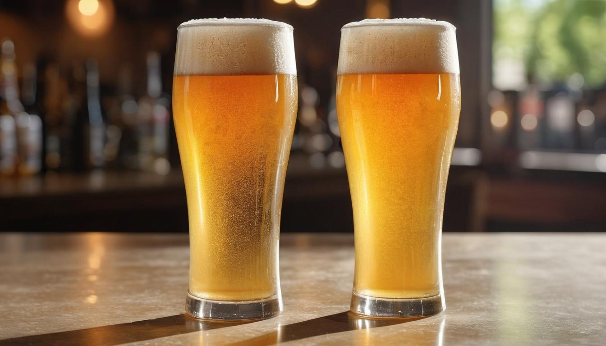
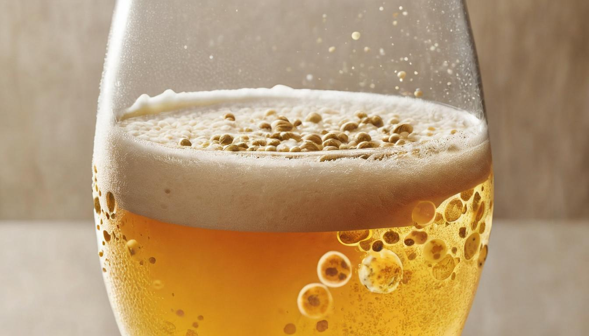
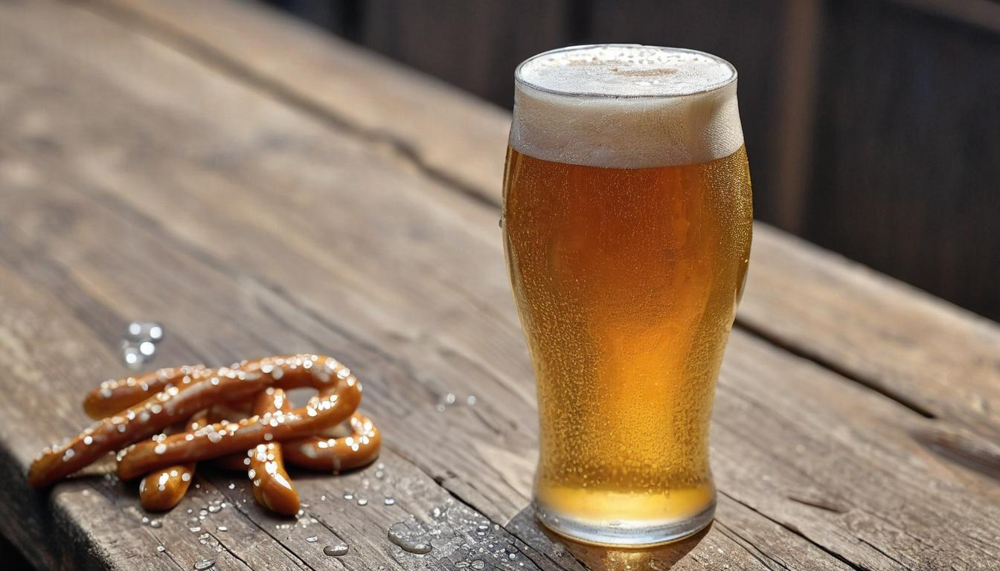

Session beers Are Marking A Come-Back
Picture this: you're at your favorite craft beer festival, ready to sample everything from hoppy IPAs to velvety stouts. Yet, as you sip from your third glass, you start feeling a bit too buzzed. This all-too-common scenario highlights a key challenge for many beer lovers who want to enjoy diverse flavors without the high ABV effects.
Session beers come to the rescue here, offering a delightful balance of taste and lower alcohol content. Originating from UK pub sessions where patrons enjoyed extended drinking without getting overly intoxicated, session beers are crafted to be both flavorful and refreshing. By investing considerable time researching different brews and their profiles, we've gathered extensive information that not only describes these beers but also guides you on where to find them.
Session beer refers to a style of beer that typically has a lower alcohol content, usually under 5% ABV, making it more drinkable over an extended period. These beers maintain a balance between flavor intensity and lower alcohol content, providing a refreshing and satisfying drinking experience. Examples of sessionable beer styles include Pilsner, Witbier, and Pale Ale.

What is a Session Beer?
Imagine this: It's a bright, sunny afternoon with the temperature rising into the mid-80s (F). The aroma of your turkey smoking in the backyard tantalizes your senses. You reach for a cool, crisp beer to quench your thirst as you relax and enjoy the day. In this moment, you crave a beer that doesn't weigh you down but still offers plenty of flavor and refreshment. This is where the concept of session beers comes into play.
So what exactly classifies a beer as a "session" beer? Simply put, a session beer is one that allows you to have multiple servings over an extended period without overwhelming your senses with its alcoholic punch. This means these beers typically have a lower alcohol by volume (ABV), generally under 5%. That's significantly lower than the hefty ABV percentages often found in craft beers today.
Consider this: A typical IPA might have an ABV anywhere between 6% and 7.5%, while a session IPA could weigh in at around 4%. It might not seem like much of a difference, but that 2-3% drop can completely change the drinking experience.
The lower alcohol content in session beers is exactly what makes them perfect for those long gatherings with friends or relaxed afternoons with family. They are easy to drink and won't leave you feeling heavy or groggy after just one or two.
But why the term "session"? Well, the term harks back to the UK pub tradition. Back in the day, pub-goers sought beers that were more social and allowed them to session—that is, to drink over an extended period without becoming overly intoxicated. It was all about savoring good company and conversation without feeling weighed down too quickly.
Now that we've established their historical roots and defining characteristics, let's explore the diverse styles and delightful flavors that session beers offer.
Benefits of Low ABV Beers
Low ABV beers come with significant advantages that go beyond simply savoring a tasty beverage. One key benefit of low ABV beers, particularly session beers, is responsible drinking. With a lower alcohol content, individuals can engage in social gatherings without the risk of becoming inebriated too quickly, fostering prolonged enjoyment of social interactions without the negative effects linked to higher alcohol beverages.
Moreover, one of the most immediate and practical benefits of low ABV beers is their reduced caloric content. Typically, these brews contain fewer calories than their high-ABV counterparts, making them an excellent choice for those conscious of their calorie intake while still craving the pleasure of a beer. This not only supports health-conscious choices but also offers a way to relish a delicious beer without feeling weighed down by excessive calories.
Another significant advantage associated with low ABV beers is the decreased likelihood of severe hangovers compared to consuming higher alcohol content beverages. The lower alcohol content reduces the chances of bodies becoming dehydrated or suffering from the aftereffects of excessive alcohol consumption. Consequently, individuals can enjoy the camaraderie and taste of beer with a diminished risk of unpleasant hangover symptoms, ultimately enhancing the overall drinking experience while maintaining mindfulness of personal health and well-being.
In summary, low ABV beers offer benefits such as supporting responsible drinking practices, providing a lower-calorie option for those tracking their intake, and reducing the potential for severe hangover symptoms. These advantages combine to make low ABV beers an appealing choice for a wide range of consumers looking to savor a flavorful beverage while keeping health considerations in mind.
As our journey through the realm of craft beer continues, let's now turn our attention to the intricate world of flavors and aromas that define various low ABV beer styles.
Exploring Flavors and Aromas

When it comes to session beers, the focus is on creating an experience that's lighter on alcohol but doesn't skimp on flavor. These brews offer a wide spectrum of tastes, from delicate citrus notes to subtle herbal nuances, making them a delightful choice for a laid-back evening or a leisurely weekend afternoon.
A session IPA, for example, can be a revelation with its harmonious blend of citrus and pine without the overpowering bitterness found in regular IPAs. The flavors are crafted to be vibrant yet approachable, enticing both seasoned beer aficionados and newcomers alike. Imagine sipping on a refreshing beverage infused with just the right amount of hoppy goodness—it's an invitation to indulge without overwhelming your palate.
Moving beyond IPAs, session stouts offer a different yet equally captivating experience. Picture this: subtle hints of chocolate and coffee dancing together in each sip, creating a velvety smoothness that lingers on your senses. The beauty of session stouts lies in their ability to captivate with rich, deep flavors while still maintaining a lightness that begs for another glass.
For those drawn to the bright and fruity side of things, session ales present an array of delightful aromas. Fruity notes gently intertwine with herbal accents, creating a symphony of scents that greet you as soon as you pop the cap off the bottle or tap the keg. It's like walking through an orchard or garden at dusk—a fragrant and inviting experience that sets the stage for pure enjoyment.
Each style of session beer offers its own unique bouquet of flavors and aromas, enhancing every sip with layers of complexity. As you explore this world of session beers, remember that there's something for everyone, whether you're seeking bright citrus notes or the comforting embrace of coffee and chocolate.
As we embark on a journey through the world of session beers, it's time to uncover the specific styles that have garnered popularity among enthusiasts seeking low ABV craft beer experiences.
Popular Session Beer Styles
When it comes to session beers, there are various styles that cater to different tastes. Let's take a closer look at some of the most beloved session beer styles and what sets them apart.
Pilsner
Pilsner is a classic style known for its light, crisp character and smooth finish. It's often appreciated for its balanced combination of subtle hop notes and a classic malt backbone, making it a go-to choice for those seeking a refreshing, easy-drinking experience.
Witbier
Originating from Belgium, Witbier is a flavorful wheat beer that charms the palate with its citrusy and coriander-infused profile. This style often features a hazy appearance and is celebrated for its vibrant, zesty appeal, making it an excellent choice for those looking to indulge in a refreshing and aromatic drinking experience.
Pale Ale
Milder versions of traditional pale ales are sought after by many who appreciate balanced flavors. These session-friendly pale ales offer a harmonious blend of malt sweetness and hop bitterness, delivering a well-rounded drinking experience that isn't overpowering - perfect for casual sipping and enjoying with friends.
Gose
A unique and memorable style, Gose stands out for its tartness and slight salinity. Brewed with coriander and often featuring fruit or herbal additions, Gose is known for being lively and invigorating, making it an ideal choice for warm summer days when you need something light and thirst-quenching.
Hefeweizen
Hailing from Germany, Hefeweizen is a beloved wheat beer distinguished by its distinctive banana and clove flavors. This style is adored for its slightly hazy appearance and effervescent nature, offering drinkers a delightful sensory journey filled with fruity, spicy nuances.
While each style has its own unique characteristics and charm, they all share one common trait: they are carefully crafted to provide an enjoyable drinking experience without overwhelming your palate or senses. These sessionable beers offer depth and complexity while remaining approachable, catering to a wide range of taste preferences.
We'll dive deeper into these distinct styles in the upcoming sections, exploring their flavor profiles, food pairings, serving temperatures, and more. Whether you're new to the world of session beers or a seasoned enthusiast, there's always something new and exciting to discover within these diverse styles.
Now that we've explored the diverse array of session beer styles, let's venture into the delightful realm of food pairings that elevate the session beer experience.
Perfect Pairings for Session Beers
When enjoying session beers, finding the right food pairings can elevate the entire tasting experience.
Light Salads
The crisp and refreshing character of session beers makes them perfect companions for light, fresh salads. A session beer's light body and low bitterness complement the vibrant flavors of fresh greens and vinaigrette, resulting in a well-balanced and enjoyable combination. The beer's effervescence cleanses the palate after each bite, enhancing the overall dining experience.
Grilled Chicken
Grilled chicken, with its smoky and savory profile, pairs exceptionally well with the maltiness of pale ales. The bold yet approachable flavor profile of pale ales complements the grilled flavors of the chicken, creating a harmonious blend of tastes. The slight hoppy bitterness present in many pale ales provides a pleasant contrast to the richness of the chicken, making each sip and bite a delightful experience.
Seafood Dishes
Pairing seafood dishes with session beers is a match made in gastronomic heaven. The crispness and effervescence of pilsners and witbiers beautifully accentuate the delicate flavors of seafood. Whether it's the briny sweetness of oysters or the buttery tenderness of lobster, these beer styles complement the seafood's nuances, making every bite an extraordinary culinary adventure.
Soft Cheeses
Soft, creamy cheeses such as Brie or Camembert find their perfect companion in session stouts with their dark, roasted notes. The combination of smooth, luscious cheese and the deep flavors of a stout creates a symphony of taste on the palate. The roasty aroma and mild bitterness of the stout provide a delightful contrast to the creaminess of the cheese, resulting in a pairing that tantalizes the taste buds.
Understanding how different foods interact with specific session beer styles can significantly enrich your overall tasting experience. By exploring these complementary pairings, you'll discover new dimensions to both your favorite dishes and your preferred session beers.
Tips for Enjoying Session Beers

When it comes to savoring session beers, several key tips can enhance your drinking experience and help you fully appreciate the nuanced flavors and aromas they offer.
Serve at the Right Temperature
One essential factor in enjoying a session beer is serving it at the correct temperature. Unlike stronger beers that might require slightly higher serving temperatures, most session beers are best enjoyed slightly chilled, around 45-50°F. This optimal temperature helps accentuate the flavors and aromas without overwhelming your taste buds.
Use Appropriate Glassware
Believe it or not, the choice of glassware significantly impacts your drinking experience. When enjoying a session beer, it's recommended to serve it in a tulip or pint glass. These glasses allow the beer to breathe, enhancing its aroma and appearance, and adding an extra layer of pleasure to your tasting experience.
Savor Slowly
Session beers are all about appreciation and enjoyment. To get the most out of them, it's crucial to savor each sip. Take your time with every glass and be sure to pay attention to the nuances of the flavors. Sipping slowly allows you to fully explore and appreciate the subtle complexities that session beers are known for.
Explore Breweries
One of the most exciting aspects of enjoying session beers is the opportunity to explore a wide array of breweries. Whether it's a local establishment or a brewery from another region, visiting different breweries or following curated lists can be an excellent way to discover new and intriguing session beers. Exploring different breweries allows you to immerse yourself in unique taste profiles and expand your palate by trying out a diverse selection of sessionable craft brews.
By incorporating these simple yet impactful tips into your session beer enjoyment, you can elevate your tasting experience and truly revel in the delightful world of low ABV craft beer styles.
Whether you're a seasoned beer aficionado or just beginning to dive into the world of craft brews, session beers offer a refreshing and flavorful journey that's worth experiencing. Cheers to exploring the diverse range of sessionable brews!